CODING AGENTS AS PIXEL WORLD MODELS
traex/DeepSeek-V4.1-Flash · dynamic_spatial_relationship_0038
点击播放 · 原生 RGB 像素
逐轮保存的候选
回放视频、检查图与代码变化。
每份候选均可单独播放。实际图片检查记录在下方工具轨迹中。
候选 01播放与检查图
点击播放 · 原生 RGB 像素
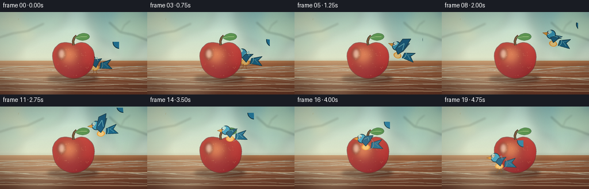
展开代码变化
--- 上一保存版本
+++ 本次保存版本
@@ -0,0 +1,428 @@
+from pathlib import Path
+
+import numpy as np
+from PIL import Image, ImageDraw, ImageFilter
+
+import artifact_io
+
+
+WIDTH = 256
+HEIGHT = 144
+FRAMES = 20
+FPS = 4.0
+SCALE = 4
+W = WIDTH * SCALE
+H = HEIGHT * SCALE
+
+
+def srgb(hex_color):
+ value = hex_color.lstrip("#")
+ return tuple(int(value[i:i + 2], 16) for i in (0, 2, 4))
+
+
+def scaled(points):
+ return [(float(x) * SCALE, float(y) * SCALE) for x, y in points]
+
+
+def chaikin(points, passes=3, closed=True):
+ pts = [tuple(p) for p in points]
+ for _ in range(passes):
+ result = []
+ count = len(pts)
+ limit = count if closed else count - 1
+ if not closed:
+ result.append(pts[0])
+ for index in range(limit):
+ p0 = pts[index]
+ p1 = pts[(index + 1) % count]
+ result.append((0.75 * p0[0] + 0.25 * p1[0], 0.75 * p0[1] + 0.25 * p1[1]))
+ result.append((0.25 * p0[0] + 0.75 * p1[0], 0.25 * p0[1] + 0.75 * p1[1]))
+ if not closed:
+ result.append(pts[-1])
+ pts = result
+ return pts
+
+
+def gradient(size, top, bottom, horizontal=False):
+ width, height = size
+ if horizontal:
+ mix = np.linspace(0.0, 1.0, width, dtype=np.float32)[None, :, None]
+ mix = np.broadcast_to(mix, (height, width, 1))
+ else:
+ mix = np.linspace(0.0, 1.0, height, dtype=np.float32)[:, None, None]
+ mix = np.broadcast_to(mix, (height, width, 1))
+ top = np.array(top, dtype=np.float32)[None, None, :]
+ bottom = np.array(bottom, dtype=np.float32)[None, None, :]
+ return Image.fromarray(np.uint8(top * (1.0 - mix) + bottom * mix), "RGB")
+
+
+def paste_layer(base, layer, position=(0, 0)):
+ base.alpha_composite(layer, dest=(int(position[0]), int(position[1])))
+
+
+def smooth_ellipse(draw, box, fill, outline=None, width=1):
+ draw.ellipse(tuple(v * SCALE for v in box), fill=fill, outline=outline,
+ width=max(1, int(width * SCALE)))
+
+
+def make_background():
+ image = gradient((W, H), srgb("#9FD6D8"), srgb("#F5E4BC")).convert("RGBA")
+
+ # Sunlit wall and soft out-of-focus foliage.
+ bokeh = Image.new("RGBA", (W, H), (0, 0, 0, 0))
+ bd = ImageDraw.Draw(bokeh)
+ circles = [
+ (15, 9, 52, "#B9D9A6", 72),
+ (39, 18, 36, "#E5D991", 70),
+ (76, -2, 40, "#7FB89D", 65),
+ (203, 7, 49, "#78AE94", 58),
+ (229, 26, 34, "#C7D890", 75),
+ (12, 57, 25, "#5F9E86", 45),
+ (219, 63, 22, "#6C9F7D", 45),
+ ]
+ for x, y, radius, color, alpha in circles:
+ fill = srgb(color) + (alpha,)
+ bd.ellipse(
+ ((x - radius) * SCALE, (y - radius) * SCALE,
+ (x + radius) * SCALE, (y + radius) * SCALE),
+ fill=fill,
+ )
+ bokeh = bokeh.filter(ImageFilter.GaussianBlur(7.5 * SCALE))
+ image.alpha_composite(bokeh)
+
+ # Distant soft branches.
+ branches = Image.new("RGBA", (W, H), (0, 0, 0, 0))
+ br = ImageDraw.Draw(branches)
+ br.line(scaled([(-10, 47), (22, 37), (48, 33), (76, 20)]),
+ fill=srgb("#4F786B") + (95,), width=2 * SCALE)
+ br.line(scaled([(258, 50), (232, 40), (209, 35), (190, 18)]),
+ fill=srgb("#53786C") + (80,), width=2 * SCALE)
+ br.line(scaled([(210, 35), (216, 23), (226, 15)]),
+ fill=srgb("#53786C") + (72,), width=1 * SCALE)
+ branches = branches.filter(ImageFilter.GaussianBlur(1.4 * SCALE))
+ image.alpha_composite(branches)
+
+ # Tabletop.
+ table = gradient((W, 59 * SCALE), srgb("#A96B42"), srgb("#6D3B29"))
+ table = table.convert("RGBA")
+ td = ImageDraw.Draw(table)
+ for row, color, alpha in [
+ (9, "#C68A59", 110),
+ (17, "#7A452D", 85),
+ (28, "#C58A59", 65),
+ (39, "#74402C", 90),
+ (51, "#B97A4C", 55),
+ ]:
+ y = row * SCALE
+ td.line([(0, y), (W, y + 2 * SCALE)], fill=srgb(color) + (alpha,), width=SCALE)
+
+ rng = np.random.default_rng(7)
+ for _ in range(17):
+ y = rng.uniform(4, 55) * SCALE
+ amplitude = rng.uniform(1.0, 3.8) * SCALE
+ phase = rng.uniform(0, 6.2)
+ points = []
+ for x in np.linspace(-8, WIDTH + 8, 34):
+ py = y + amplitude * np.sin(x / 31.0 + phase)
+ points.append((x * SCALE, py))
+ color = srgb("#5D3224") + (int(rng.uniform(25, 62)),)
+ td.line(points, fill=color, width=max(1, int(rng.uniform(0.5, 1.2) * SCALE)))
+ table = table.filter(ImageFilter.GaussianBlur(0.45 * SCALE))
+ image.alpha_composite(table, (0, 85 * SCALE))
+
+ # Highlight at the table edge and a subtle wall/table contact shade.
+ edge = Image.new("RGBA", (W, H), (0, 0, 0, 0))
+ ed = ImageDraw.Draw(edge)
+ ed.rectangle((0, 84 * SCALE, W, 88 * SCALE), fill=srgb("#F6D7A2") + (75,))
+ ed.rectangle((0, 88 * SCALE, W, 95 * SCALE), fill=srgb("#553323") + (40,))
+ edge = edge.filter(ImageFilter.GaussianBlur(2.1 * SCALE))
+ image.alpha_composite(edge)
+
+ # Broad warm light falling from the upper left.
+ light = Image.new("RGBA", (W, H), (0, 0, 0, 0))
+ ld = ImageDraw.Draw(light)
+ ld.ellipse((-56 * SCALE, -66 * SCALE, 180 * SCALE, 148 * SCALE),
+ fill=srgb("#FFF3C8") + (58,))
+ light = light.filter(ImageFilter.GaussianBlur(20 * SCALE))
+ image.alpha_composite(light)
+ return image
+
+
+def make_apple_shadow():
+ layer = Image.new("RGBA", (W, H), (0, 0, 0, 0))
+ draw = ImageDraw.Draw(layer)
+ draw.ellipse((82 * SCALE, 109 * SCALE, 171 * SCALE, 123 * SCALE),
+ fill=srgb("#3A231E") + (115,))
+ draw.ellipse((96 * SCALE, 111 * SCALE, 159 * SCALE, 120 * SCALE),
+ fill=srgb("#241A17") + (88,))
+ return layer.filter(ImageFilter.GaussianBlur(3.0 * SCALE))
+
+
+def apple_body_points():
+ controls = [
+ (128, 56), (115, 53), (103, 55), (95, 63), (91, 73),
+ (92, 84), (96, 98), (105, 108), (117, 114), (128, 116),
+ (140, 114), (151, 108), (160, 98), (164, 84), (164, 73),
+ (160, 63), (151, 55), (140, 53), (132, 56), (128, 58),
+ ]
+ return chaikin(controls, passes=3, closed=True)
+
+
+def make_apple():
+ layer = Image.new("RGBA", (W, H), (0, 0, 0, 0))
+ points = scaled(apple_body_points())
+ mask = Image.new("L", (W, H), 0)
+ md = ImageDraw.Draw(mask)
+ md.polygon(points, fill=255)
+
+ # Warm red body with a darker base and side.
+ yy, xx = np.mgrid[0:H, 0:W].astype(np.float32)
+ nx = xx / W
+ ny = yy / H
+ diagonal = np.clip(0.18 + nx * 0.25 + ny * 0.62, 0.0, 1.0)
+ top = np.array(srgb("#F05A3E"), dtype=np.float32)
+ bottom = np.array(srgb("#9A1D28"), dtype=np.float32)
+ array = top[None, None, :] * (1.0 - diagonal[:, :, None]) + bottom[None, None, :] * diagonal[:, :, None]
+ body = Image.fromarray(np.uint8(np.clip(array, 0, 255)), "RGB").convert("RGBA")
+
+ details = Image.new("RGBA", (W, H), (0, 0, 0, 0))
+ dd = ImageDraw.Draw(details)
+ dd.ellipse((99 * SCALE, 57 * SCALE, 139 * SCALE, 92 * SCALE),
+ fill=srgb("#FFC56F") + (112,))
+ dd.ellipse((94 * SCALE, 92 * SCALE, 161 * SCALE, 120 * SCALE),
+ fill=srgb("#5D1423") + (76,))
+ details = details.filter(ImageFilter.GaussianBlur(7.0 * SCALE))
+ body.alpha_composite(details)
+
+ shine = Image.new("RGBA", (W, H), (0, 0, 0, 0))
+ sd = ImageDraw.Draw(shine)
+ sd.ellipse((101 * SCALE, 64 * SCALE, 113 * SCALE, 82 * SCALE),
+ fill=srgb("#FFF0CF") + (140,))
+ sd.ellipse((105 * SCALE, 66 * SCALE, 109 * SCALE, 76 * SCALE),
+ fill=srgb("#FFFFFF") + (115,))
+ shine = shine.filter(ImageFilter.GaussianBlur(2.2 * SCALE))
+ body.alpha_composite(shine)
+
+ # Fine apple speckles.
+ speckles = Image.new("RGBA", (W, H), (0, 0, 0, 0))
+ sp = ImageDraw.Draw(speckles)
+ speckle_rng = np.random.default_rng(12)
+ for _ in range(38):
+ angle = speckle_rng.uniform(0, 2 * np.pi)
+ radius = np.sqrt(speckle_rng.uniform(0.08, 0.9))
+ x = 128 + np.cos(angle) * 30 * radius
+ y = 87 + np.sin(angle) * 26 * radius
+ dot = speckle_rng.uniform(0.35, 0.9)
+ sp.ellipse(((x - dot) * SCALE, (y - dot) * SCALE,
+ (x + dot) * SCALE, (y + dot) * SCALE),
+ fill=srgb("#FFD795") + (int(speckle_rng.uniform(20, 55)),))
+ body.alpha_composite(speckles)
+
+ body.putalpha(mask)
+ outline = ImageDraw.Draw(layer)
+ outline.line(points + [points[0]], fill=srgb("#6E2024") + (210,), width=int(1.5 * SCALE), joint="curve")
+ layer.alpha_composite(body)
+ outline = ImageDraw.Draw(layer)
+ outline.line(points + [points[0]], fill=srgb("#6E2024") + (180,), width=max(1, int(0.8 * SCALE)), joint="curve")
+
+ # Stem.
+ stem_points = scaled([(128, 58), (127, 51), (129, 45), (133, 41)])
+ outline.line(stem_points, fill=srgb("#3A261C"), width=int(4.0 * SCALE), joint="curve")
+ outline.line(stem_points, fill=srgb("#76502F"), width=int(2.2 * SCALE), joint="curve")
+ outline.line([(128.5, 55), (128.1, 49), (130.5, 44)],
+ fill=srgb("#BD8A4C") + (130,), width=max(1, int(0.7 * SCALE)))
+
+ # Leaf with a tiny central vein.
+ leaf_controls = [(130, 45), (140, 37), (151, 37), (157, 43),
+ (151, 49), (140, 50), (130, 45)]
+ leaf = scaled(chaikin(leaf_controls, passes=3, closed=True))
+ outline.polygon(leaf, fill=srgb("#4C8B45"))
+ outline.line(leaf + [leaf[0]], fill=srgb("#315F36") + (220,), width=max(1, int(0.8 * SCALE)))
+ outline.line(scaled([(132, 45), (141, 43), (151, 43)]),
+ fill=srgb("#A7C66A") + (175,), width=max(1, int(0.8 * SCALE)))
+ return layer
+
+
+def make_bird(flap, flying, brightness=1.0):
+ size = 78 * SCALE
+ image = Image.new("RGBA", (size, size), (0, 0, 0, 0))
+ draw = ImageDraw.Draw(image)
+ cx, cy = size / 2, size / 2
+
+ def p(x, y):
+ return (cx + x * SCALE, cy + y * SCALE)
+
+ def poly(points, fill, outline=None, width=1):
+ pts = [p(x, y) for x, y in points]
+ draw.polygon(pts, fill=fill)
+ if outline:
+ draw.line(pts + [pts[0]], fill=outline, width=max(1, int(width * SCALE)), joint="curve")
+
+ dark = srgb("#153846")
+ body_blue = srgb("#267FA4")
+ wing_blue = srgb("#195E82")
+ wing_light = srgb("#5BB8C8")
+ head_blue = srgb("#3B9FC0")
+ belly = srgb("#F0A23A")
+
+ # Tail, drawn behind the body.
+ tail = [(-7, -2), (-25, -8), (-19, 0), (-27, 8), (-6, 7)]
+ poly(tail, srgb("#1B698B") + (255,), dark + (240,), 1.2)
+ draw.line([p(-22, -5), p(-13, -1), p(-20, 5)],
+ fill=srgb("#6CC4CF") + (130,), width=max(1, int(0.65 * SCALE)))
+
+ # Far wing, slightly muted.
+ far_lift = flap * 6.5
+ far_wing = [(-4, -4), (-10, -15 - far_lift), (3, -13 - far_lift * 0.7), (8, -4)]
+ if not flying:
+ far_wing = [(-3, -4), (-8, -9), (5, -8), (9, -2)]
+ poly(far_wing, srgb("#205E7B") + (235,), dark + (190,), 0.9)
+
+ # Body and pale chest.
+ smooth_ellipse(draw, (-13, -11, 11, 12), body_blue + (255,), dark + (255,), 1.4)
+ draw.ellipse(tuple(int(v * SCALE + (cx if i % 2 == 0 else cy)) for i, v in enumerate((-4, 1, 10, 11))),
+ fill=belly + (255,))
+ draw.ellipse(tuple(int(v * SCALE + (cx if i % 2 == 0 else cy)) for i, v in enumerate((-2, 2, 8, 10))),
+ fill=srgb("#FFD078") + (220,))
+ draw.arc((p(-11, -10), p(10, 11)), 100, 245,
+ fill=srgb("#6DCBD2") + (130,), width=max(1, int(0.8 * SCALE)))
+
+ # Head, eye, and beak.
+ head_x, head_y, head_r = 10, -9, 8
+ draw.ellipse((p(head_x - head_r, head_y - head_r), p(head_x + head_r, head_y + head_r)),
+ fill=head_blue + (255,), outline=dark + (255,), width=max(1, int(1.3 * SCALE)))
+ draw.ellipse((p(10, -16), p(16, -10)), fill=srgb("#84D6D8") + (85,))
+ draw.ellipse((p(13, -12), p(17, -8)), fill=srgb("#F7F3DD") + (255,))
+ draw.ellipse((p(14.2, -11), p(16.5, -8.8)), fill=srgb("#102A34") + (255,))
+ draw.ellipse((p(14.7, -10.7), p(15.5, -10.0)), fill=srgb("#FFFFFF") + (230,))
+ beak = [(17, -11), (25, -8.5), (17, -5.5)]
+ poly(beak, srgb("#F4A22F") + (255,), srgb("#8B5524") + (255,), 0.9)
+ draw.line([p(18, -8.5), p(23, -8.5)], fill=srgb("#B96822") + (180,), width=max(1, SCALE // 2))
+
+ # Near wing.
+ lift = flap * 14.0
+ if flying:
+ near_wing = [(-4, -5), (-9, -17 - lift), (4, -15 - lift * 0.75), (10, -4), (3, 4)]
+ else:
+ near_wing = [(-4, -4), (-9, -10), (4, -8), (9, -1), (1, 6)]
+ poly(near_wing, wing_blue + (245,), dark + (240,), 1.1)
+ draw.line([p(-2, -6), p(-1, -12 - lift * 0.45), p(6, -8)],
+ fill=wing_light + (190,), width=max(1, int(1.0 * SCALE)))
+
+ # Tiny feet while perched.
+ if not flying:
+ draw.line([p(1, 10), p(0, 15), p(-2, 17)], fill=srgb("#8B5729"), width=max(1, int(0.8 * SCALE)))
+ draw.line([p(5, 9), p(5, 15), p(8, 17)], fill=srgb("#8B5729"), width=max(1, int(0.8 * SCALE)))
+ draw.line([p(-2, 17), p(1, 17)], fill=srgb("#8B5729"), width=max(1, int(0.7 * SCALE)))
+ draw.line([p(6, 17), p(9, 17)], fill=srgb("#8B5729"), width=max(1, int(0.7 * SCALE)))
+
+ if brightness != 1.0:
+ array = np.asarray(image, dtype=np.float32).copy()
+ array[:, :, :3] *= brightness
+ image = Image.fromarray(np.uint8(np.clip(array, 0, 255)), "RGBA")
+ return image
+
+
+def add_bird(scene, center, rotation, flap, flying, brightness=1.0, mirror=False):
+ sprite = make_bird(flap, flying, brightness)
+ if mirror:
+ sprite = sprite.transpose(Image.Transpose.FLIP_LEFT_RIGHT)
+ rotated = sprite.rotate(rotation, resample=Image.Resampling.BICUBIC, expand=False)
+ left = int(center[0] * SCALE - rotated.width / 2)
+ top = int(center[1] * SCALE - rotated.height / 2)
+ scene.alpha_composite(rotated, (left, top))
+
+
+def add_finish(scene, frame_index):
+ # Warm directional lighting and a restrained photographic vignette.
+ overlay = Image.new("RGBA", (W, H), (0, 0, 0, 0))
+ od = ImageDraw.Draw(overlay)
+ od.ellipse((-30 * SCALE, -40 * SCALE, 175 * SCALE, 143 * SCALE),
+ fill=srgb("#FFF2C6") + (25,))
+ overlay = overlay.filter(ImageFilter.GaussianBlur(13 * SCALE))
+ scene.alpha_composite(overlay)
+
+ yy, xx = np.mgrid[0:H, 0:W].astype(np.float32)
+ nx = (xx - W / 2) / (W / 2)
+ ny = (yy - H / 2) / (H / 2)
+ radius = np.sqrt(nx * nx * 0.72 + ny * ny)
+ vignette = np.clip((radius - 0.55) * 0.34, 0.0, 0.25)
+ array = np.asarray(scene, dtype=np.float32)
+ array[:, :, :3] *= (1.0 - vignette[:, :, None])
+ scene = Image.fromarray(np.uint8(np.clip(array, 0, 255)), "RGBA")
+
+ # A whisper of grain keeps the flat table gradients from banding.
+ rng = np.random.default_rng(100 + frame_index)
+ grain = rng.normal(0.0, 1.9, (H, W, 1)).astype(np.float32)
+ array = np.asarray(scene, dtype=np.float32)
+ array[:, :, :3] = np.clip(array[:, :, :3] + grain, 0, 255)
+ return Image.fromarray(np.uint8(array), "RGBA")
+
+
+def main():
+ background = make_background()
+ apple_shadow = make_apple_shadow()
+ apple = make_apple()
+
+ positions = [
+ (168, 91), (169, 89), (171, 86), (174, 82), (178, 77),
+ (184, 71), (191, 64), (197, 57), (198, 50), (194, 45),
+ (187, 42), (178, 41), (168, 42), (157, 45), (147, 50),
+ (137, 57), (127, 65), (117, 75), (109, 86), (103, 98),
+ ]
+ rotations = [
+ 0, 0, -3, -8, -14,
+ -20, -24, -20, -13, -6,
+ 0, 5, 8, 5, 1,
+ -2, -1, 0, 0, 0,
+ ]
+ flaps = [
+ 0.0, 0.0, -0.1, 0.2, -0.85,
+ 0.85, -0.9, 0.8, -0.8, 0.7,
+ -0.7, 0.8, -0.75, 0.55, -0.55,
+ 0.25, -0.15, 0.0, 0.0, 0.0,
+ ]
+ flying = [False, False, False, False, True] + [True] * 13 + [False, False]
+
+ frames = []
+ for index, (position, rotation, flap, is_flying) in enumerate(
+ zip(positions, rotations, flaps, flying)):
+ scene = background.copy()
+ scene.alpha_composite(apple_shadow)
+
+ foreground = index >= 9
+ if not foreground:
+ add_bird(scene, position, rotation, flap, is_flying,
+ brightness=0.86, mirror=True)
+
+ scene.alpha_composite(apple)
+
+ if foreground:
+ add_bird(scene, position, rotation, flap, is_flying,
+ brightness=1.0, mirror=True)
+ if index >= 17:
+ shadow = Image.new("RGBA", (W, H), (0, 0, 0, 0))
+ sd = ImageDraw.Draw(shadow)
+ sx, sy = position
+ sd.ellipse(((sx - 10) * SCALE, (sy + 14) * SCALE,
+ (sx + 10) * SCALE, (sy + 19) * SCALE),
+ fill=srgb("#34201C") + (75,))
+ shadow = shadow.filter(ImageFilter.GaussianBlur(2.2 * SCALE))
+ # Rebuild this landing area so the contact shadow sits behind the bird.
+ scene = background.copy()
+ scene.alpha_composite(apple_shadow)
+ scene.alpha_composite(apple)
+ scene.alpha_composite(shadow)
+ add_bird(scene, position, rotation, flap, is_flying,
+ brightness=1.0, mirror=True)
+
+ scene = add_finish(scene, index)
+ final = scene.convert("RGB").resize((WIDTH, HEIGHT), Image.Resampling.LANCZOS)
+ frames.append(np.asarray(final, dtype=np.uint8))
+
+ frames = np.stack(frames)
+ artifact_io.save(frames, Path(__file__).resolve().parent)
+
+
+if __name__ == "__main__":
+ main()
候选 02播放与检查图
点击播放 · 原生 RGB 像素

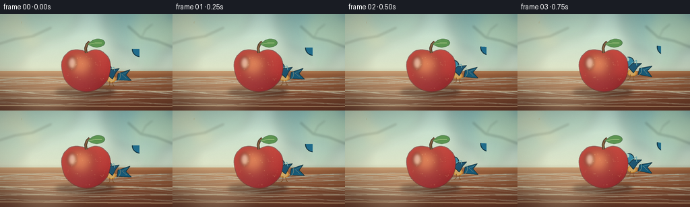
展开代码变化
--- 上一保存版本
+++ 本次保存版本
@@ -244,7 +244,7 @@
def make_bird(flap, flying, brightness=1.0):
- size = 78 * SCALE
+ size = 88 * SCALE
image = Image.new("RGBA", (size, size), (0, 0, 0, 0))
draw = ImageDraw.Draw(image)
cx, cy = size / 2, size / 2
@@ -271,42 +271,44 @@
draw.line([p(-22, -5), p(-13, -1), p(-20, 5)],
fill=srgb("#6CC4CF") + (130,), width=max(1, int(0.65 * SCALE)))
- # Far wing, slightly muted.
- far_lift = flap * 6.5
- far_wing = [(-4, -4), (-10, -15 - far_lift), (3, -13 - far_lift * 0.7), (8, -4)]
+ # Far wing, slightly muted. Broad primaries keep the silhouette avian.
+ far_lift = flap * 7.0
+ far_wing = [(-6, -4), (-14, -17 - far_lift), (-3, -18 - far_lift * 0.8),
+ (7, -11 - far_lift * 0.4), (9, -3)]
if not flying:
- far_wing = [(-3, -4), (-8, -9), (5, -8), (9, -2)]
+ far_wing = [(-5, -4), (-12, -10), (1, -10), (9, -3)]
poly(far_wing, srgb("#205E7B") + (235,), dark + (190,), 0.9)
# Body and pale chest.
- smooth_ellipse(draw, (-13, -11, 11, 12), body_blue + (255,), dark + (255,), 1.4)
- draw.ellipse(tuple(int(v * SCALE + (cx if i % 2 == 0 else cy)) for i, v in enumerate((-4, 1, 10, 11))),
+ smooth_ellipse(draw, (-14, -12, 12, 13), body_blue + (255,), dark + (255,), 1.4)
+ draw.ellipse(tuple(int(v * SCALE + (cx if i % 2 == 0 else cy)) for i, v in enumerate((-5, 1, 11, 12))),
fill=belly + (255,))
- draw.ellipse(tuple(int(v * SCALE + (cx if i % 2 == 0 else cy)) for i, v in enumerate((-2, 2, 8, 10))),
+ draw.ellipse(tuple(int(v * SCALE + (cx if i % 2 == 0 else cy)) for i, v in enumerate((-3, 2, 9, 11))),
fill=srgb("#FFD078") + (220,))
- draw.arc((p(-11, -10), p(10, 11)), 100, 245,
+ draw.arc((p(-12, -11), p(11, 12)), 100, 245,
fill=srgb("#6DCBD2") + (130,), width=max(1, int(0.8 * SCALE)))
# Head, eye, and beak.
- head_x, head_y, head_r = 10, -9, 8
+ head_x, head_y, head_r = 11, -10, 9
draw.ellipse((p(head_x - head_r, head_y - head_r), p(head_x + head_r, head_y + head_r)),
fill=head_blue + (255,), outline=dark + (255,), width=max(1, int(1.3 * SCALE)))
- draw.ellipse((p(10, -16), p(16, -10)), fill=srgb("#84D6D8") + (85,))
- draw.ellipse((p(13, -12), p(17, -8)), fill=srgb("#F7F3DD") + (255,))
- draw.ellipse((p(14.2, -11), p(16.5, -8.8)), fill=srgb("#102A34") + (255,))
- draw.ellipse((p(14.7, -10.7), p(15.5, -10.0)), fill=srgb("#FFFFFF") + (230,))
- beak = [(17, -11), (25, -8.5), (17, -5.5)]
+ draw.ellipse((p(11, -18), p(18, -11)), fill=srgb("#84D6D8") + (85,))
+ draw.ellipse((p(14, -13), p(19, -8)), fill=srgb("#F7F3DD") + (255,))
+ draw.ellipse((p(15.2, -12), p(17.8, -9.4)), fill=srgb("#102A34") + (255,))
+ draw.ellipse((p(15.8, -11.6), p(16.8, -10.7)), fill=srgb("#FFFFFF") + (230,))
+ beak = [(19, -12), (28, -9.5), (19, -6)]
poly(beak, srgb("#F4A22F") + (255,), srgb("#8B5524") + (255,), 0.9)
- draw.line([p(18, -8.5), p(23, -8.5)], fill=srgb("#B96822") + (180,), width=max(1, SCALE // 2))
+ draw.line([p(20, -9.5), p(26, -9.5)], fill=srgb("#B96822") + (180,), width=max(1, SCALE // 2))
# Near wing.
- lift = flap * 14.0
+ lift = flap * 15.0
if flying:
- near_wing = [(-4, -5), (-9, -17 - lift), (4, -15 - lift * 0.75), (10, -4), (3, 4)]
+ near_wing = [(-6, -5), (-13, -19 - lift), (-2, -20 - lift * 0.8),
+ (9, -11 - lift * 0.35), (11, -3), (3, 5)]
else:
- near_wing = [(-4, -4), (-9, -10), (4, -8), (9, -1), (1, 6)]
+ near_wing = [(-5, -4), (-12, -11), (0, -11), (10, -2), (2, 7)]
poly(near_wing, wing_blue + (245,), dark + (240,), 1.1)
- draw.line([p(-2, -6), p(-1, -12 - lift * 0.45), p(6, -8)],
+ draw.line([p(-3, -7), p(-3, -14 - lift * 0.45), p(7, -8)],
fill=wing_light + (190,), width=max(1, int(1.0 * SCALE)))
# Tiny feet while perched.
候选 03播放与检查图
可观测工具轨迹
实际执行的命令与返回图片。
命令 1exit 0
/bin/bash -c "pwd && rg --files -g 'prompt.txt' -g 'GENERATION_RULES.md' -g 'task_spec.json' -g '"'!*.pyc'"'"
命令 2exit 0
/bin/bash -c 'ls -la'
命令 3exit 0
/bin/bash -c "command -v ffmpeg; command -v python3; python3 - <<'PY'
import importlib.util
for m in ['PIL','numpy','cv2','imageio','matplotlib','torch','diffusers','moviepy']:
print(m, bool(importlib.util.find_spec(m)))
PY"命令 4exit 0
/bin/bash -c 'cat GENERATION_RULES.md'
命令 5exit 0
/bin/bash -c 'cat prompt.txt'
命令 6exit 0
/bin/bash -c 'cat task_spec.json'
命令 7exit 0
/bin/bash -c "sed -n '1,240p' artifact_io.py"
命令 8exit 1
/bin/bash -c 'python3 generate.py'
命令 9exit 0
/bin/bash -c 'python3 generate.py'
命令 10exit 0
/bin/bash -c "python3 - <<'PY'
from PIL import Image
from pathlib import Path
files=['frames/00.png','frames/04.png','frames/09.png','frames/15.png','frames/19.png']
ims=[Image.open(f) for f in files]
out=Image.new('RGB',(256*3,144*2),(20,20,20))
for i,im in enumerate(ims): out.paste(im,((i%3)*256,(i//3)*144))
out.resize((1536,576),Image.Resampling.NEAREST).save('.tmp/keyframes.png')
PY"命令 11exit 0
/bin/bash -c "python3 - <<'PY'
from PIL import Image
im=Image.open('frames/19.png')
im.resize((1024,576),Image.Resampling.NEAREST).save('.tmp/frame19.png')
PY"命令 12exit 0
/bin/bash -c "python3 - <<'PY'
from PIL import Image
for i in [0,4,9,15,19]:
im=Image.open(f'frames/{i:02d}.png').resize((1024,576),Image.Resampling.NEAREST)
im.save(f'.tmp/frame{i:02d}_large.png')
PY"命令 13exit 0
/bin/bash -c 'python3 generate.py'
命令 14exit 0
/bin/bash -c "python3 - <<'PY'
from PIL import Image
import numpy as np
for i in [0,4,9,15,19]:
im=Image.open(f'frames/{i:02d}.png')
im.resize((1024,576),Image.Resampling.NEAREST).save(f'.tmp/frame{i:02d}_large.png')
PY"命令 15exit 0
/bin/bash -c "python3 - <<'PY'
from pathlib import Path
import json, numpy as np
from PIL import Image
root=Path('.')
spec=json.loads((root/'task_spec.json').read_text())
files=sorted((root/'frames').glob('*.png'))
assert len(files)==spec['frames'], len(files)
shapes=set()
for p in files:
with Image.open(p) as im:
assert im.mode=='RGB', (p, im.mode)
shapes.add(im.size)
assert shapes=={(spec['width'],spec['height'])}, shapes
z=np.load(root/'pixels.npz')
assert z['pixels'].shape==(spec['height'],spec['width'],spec['frames']), z['pixels'].shape
assert (root/'index.html').is_file() and (root/'inspection.png').is_file()
print('frames',len(files),'size',shapes,'npz',z['pixels'].shape,'index_bytes',(root/'index.html').stat().st_size)
PY"视觉工具实际返回图片 1

视觉工具实际返回图片 2
视觉工具实际返回图片 3
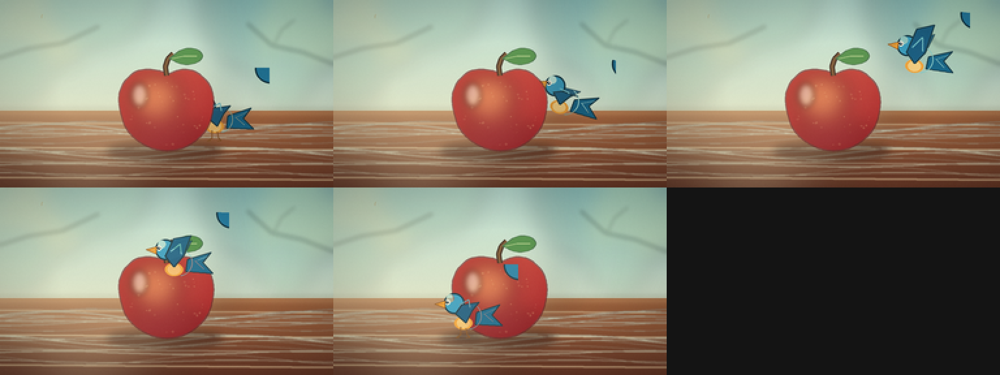
视觉工具实际返回图片 4
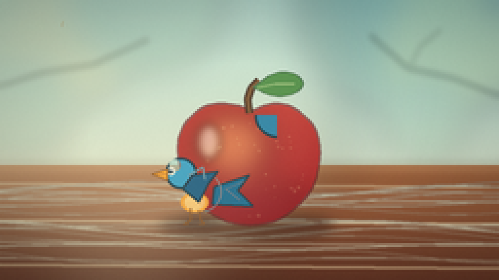
视觉工具实际返回图片 5
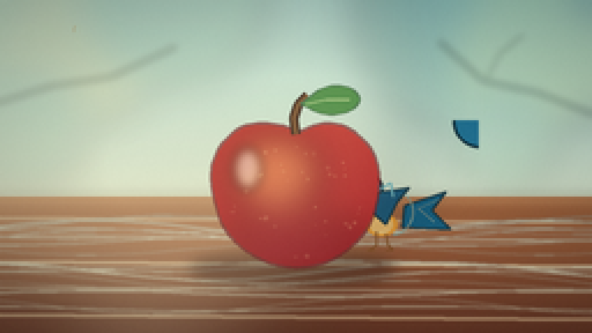
视觉工具实际返回图片 6
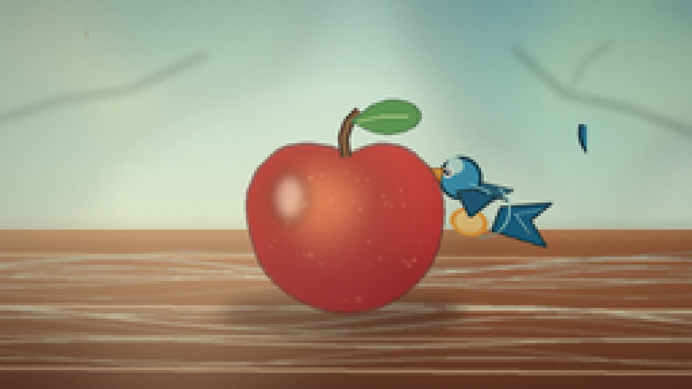
视觉工具实际返回图片 7
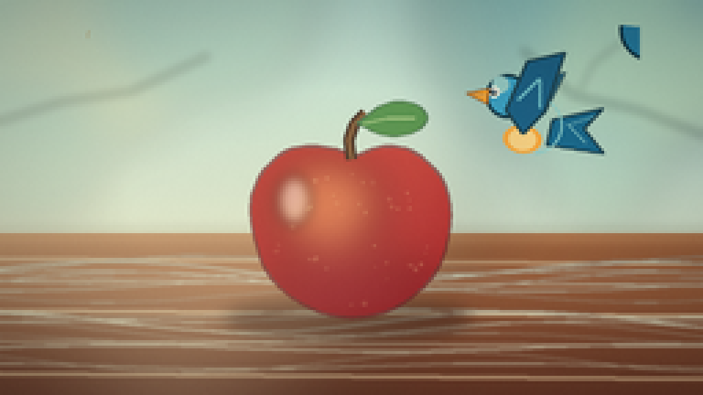
视觉工具实际返回图片 8

视觉工具实际返回图片 9
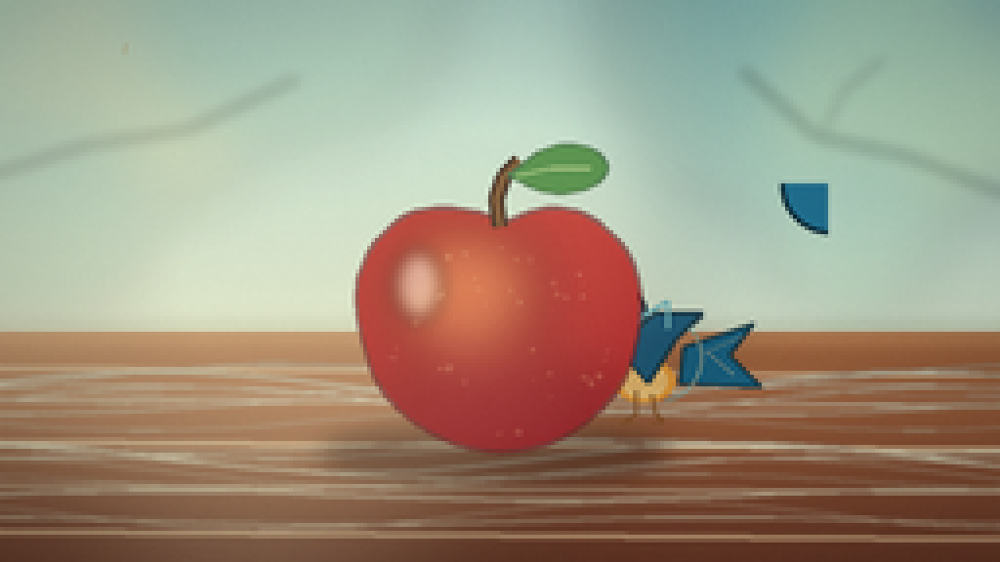
视觉工具实际返回图片 10
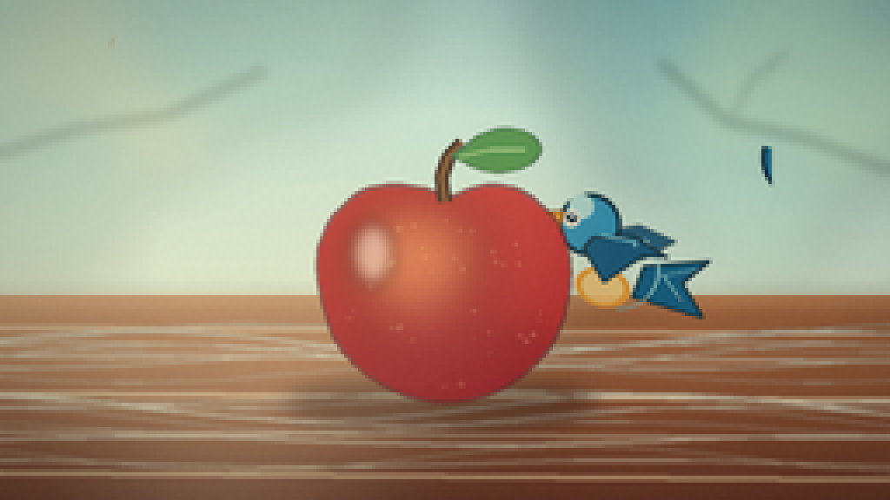
视觉工具实际返回图片 11
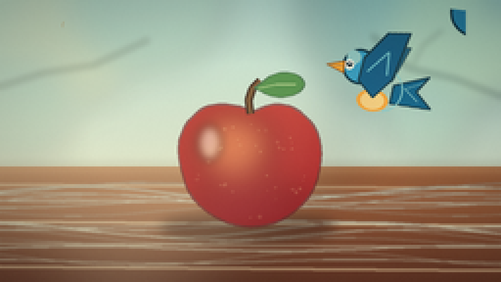
视觉工具实际返回图片 12
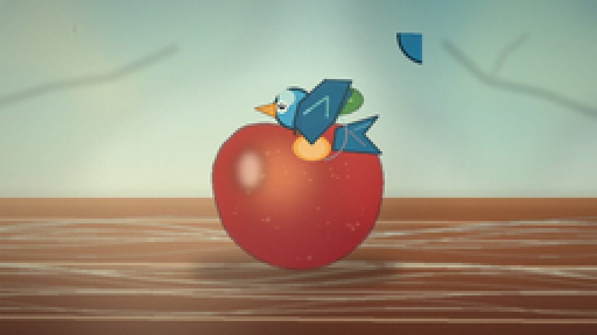
视觉工具实际返回图片 13
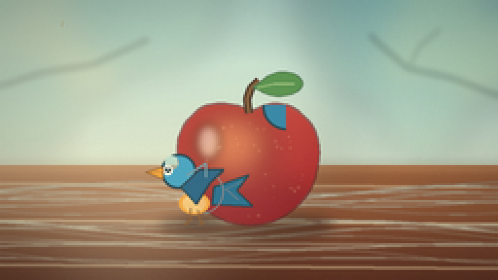
保存候选 3 份；完成命令 15 次；可验证图片返回 13 张。原始 API 响应与完整日志保留在本地。